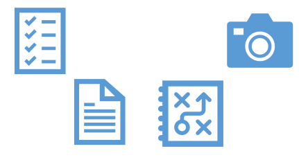

TBaaS - Testing and Building as a Service
 UI5con 2018 - Volker Buzek
UI5con 2018 - Volker Buzek
/me
- Development Architect Mobility @ j&s-soft
- ui5-codecompletion
- Twitter @vobu
- Slack vobu
- Mail volker.buzek@js-soft.com
TBaaS ... ?!
['tapas]
Ô∏èüöì üöí üèõ → üìë

Testing and Building a a 3-fold Service
Continuous Integration
① TBaaS for the developer
ü뮂Äçüíª
① TBaaS for the developer
① TBaaS for the developer
Pro | Con
| time saver | üíª ‚å®Ô∏è |
| error prevention | component zoo |
| ü§ôüèª code style (prefixes!) |
② TBaaS for the server
② TBaaS for the server
UI5 →
② TBaaS for the server (CI)
Pro | Con
| cross-platform error prevention |
false positives |
| ü§ôüèª test against different UI5 versions | karma-*-launcher stability |
| ü§ôüèª test against production|staging sources |
jenkins-node stability |
| component zoo | |
| infrastructure maintenance |
② TBaaS for the server (CD)
Pro | Con
| build effort | |
| ü§ôüèª .app version == build version |
③ TBaaS for new projects
③ TBaaS for new projects
Pro | Con
| »One Stop Shop« | one-time setup effort |
| one-time setup effort only |
some numbers
- took us 2+ years part-time
- developer
nminutes vs4 $devs * 2days- "exploratory testing" savings ~50%
- server: €€€ ~ et al
- saucelabs (enterprise): ~24.000€/year
- SCP msfDaO, CE: €3000/month
- new projects: »One Stop Shop«
TBaaS for new projects you üëã
as of now:
- offered as a subscription- and on-demand-service
- open for a limited number of ramp-up customers
- how?
- Setup/Onboarding
- Choice of TBaaS modules
- üòÄ üôå